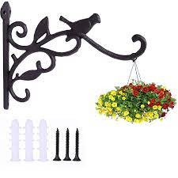
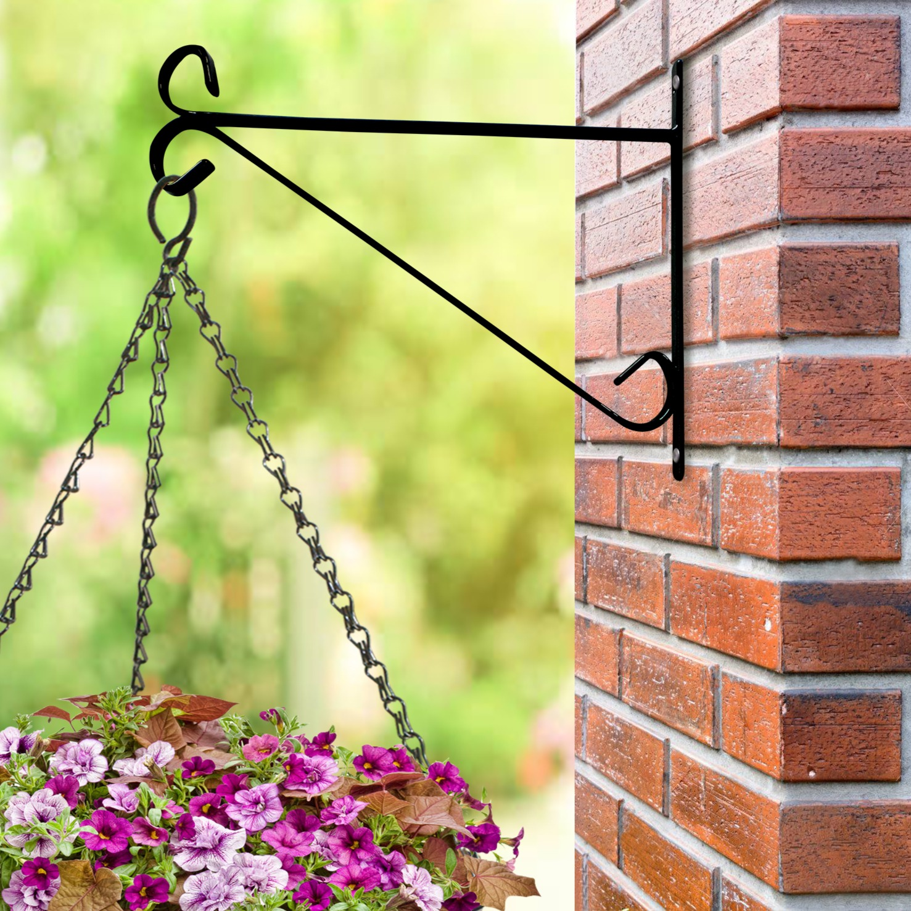
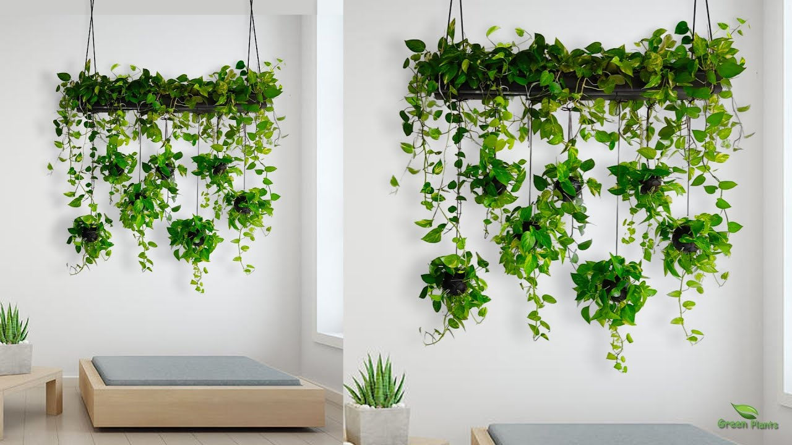
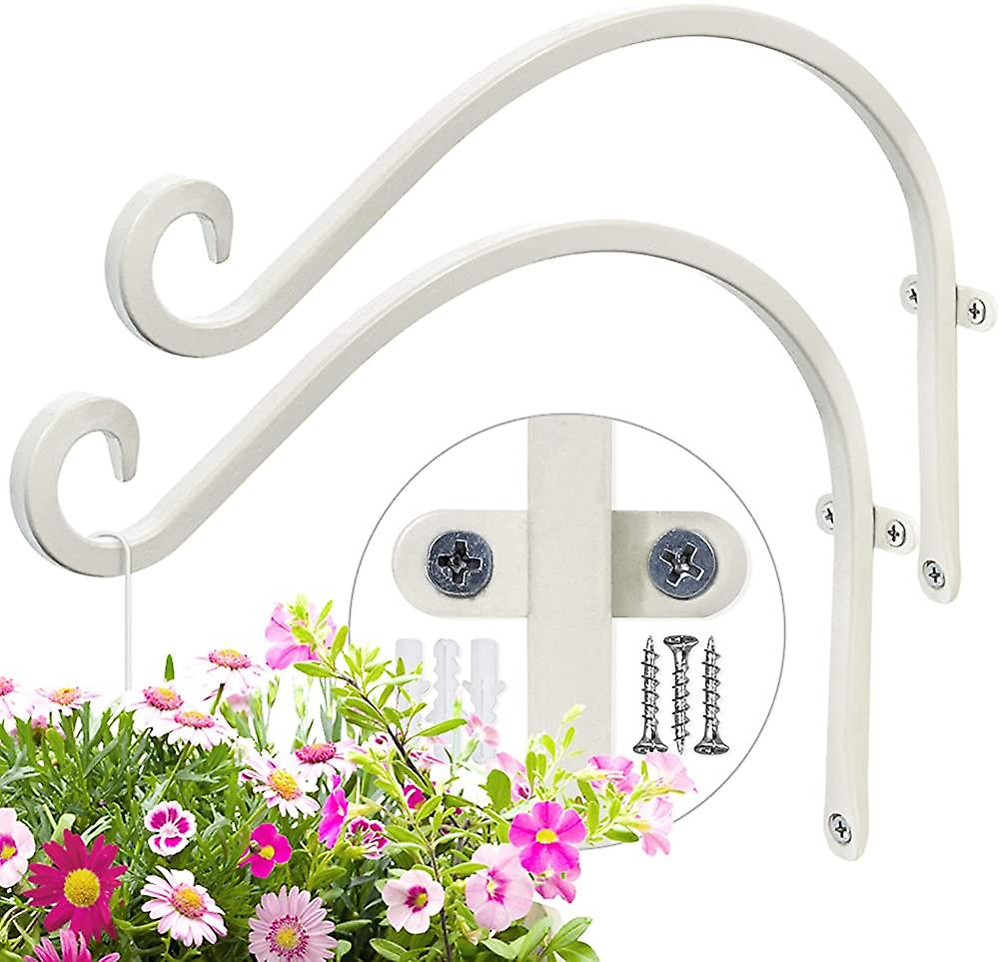
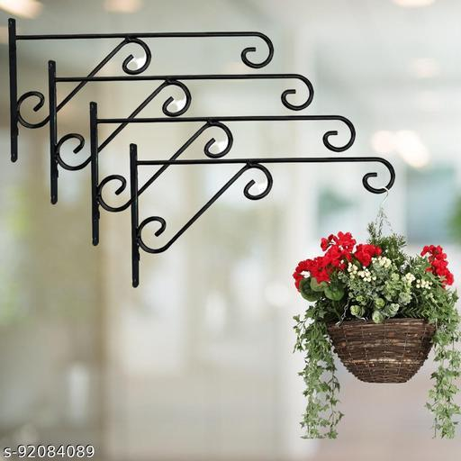

Wall hanging brackets are hardware devices designed to securely mount and support various items on walls. They are commonly used for hanging shelves, mirrors, picture frames, televisions, and other decorative or functional objects. These brackets provide stability and help distribute the weight of the item evenly, ensuring it remains safely attached to the wall. Here are some key details about wall hanging brackets:
1.Types of Wall Hanging Brackets: There are several types of brackets available, each designed for specific purposes. Some common types include: Shelf Brackets: Shelf brackets are designed specifically to support shelves and provide a sturdy base for storing items. They come in various shapes, sizes, and materials to accommodate different shelf styles and weight requirements. Common types of shelf brackets include: L-Shaped Brackets: These brackets have a 90-degree L-shape, with one arm attached to the wall and the other supporting the shelf. They are widely used for both decorative and functional shelves. Floating Brackets: Floating brackets are concealed or hidden brackets that give the illusion of a floating shelf. They are attached to the wall and provide support from beneath the shelf, allowing it to appear as if it is floating on the wall. Decorative Brackets: These brackets are designed with intricate patterns or decorative elements, adding aesthetic value to the shelves. They are often used for displaying decorative items or as a focal point in a room.
2. Picture Hanging Brackets: Picture hanging brackets are specifically designed to support picture frames and artwork on walls. They come in various styles and configurations to accommodate different frame sizes and hanging preferences. Some common types include: D-Ring Hangers: D-Ring hangers are shaped like the letter "D" and are attached to the back of the frame. They often come in pairs, allowing you to attach a hanging wire or cord between them and hang the frame securely. Sawtooth Hangers: Sawtooth hangers consist of a metal strip with jagged teeth attached to the back of the frame. They are typically used for lightweight frames and provide a simple and secure hanging solution. Keyhole Hangers: Keyhole hangers feature a keyhole-shaped slot in the back of the frame. They are designed to fit over a screw or nail on the wall, providing a secure and flush mount.
3. TV Mount Brackets: TV mount brackets are used to securely mount televisions on walls, providing an optimal viewing angle and saving space. They come in various designs and configurations to accommodate different TV sizes and wall-mounting preferences. Some common types include:
Fixed Mount Brackets: Fixed mount brackets hold the TV close to the wall and offer a stable and flush mounting solution. They provide a fixed viewing angle and are ideal for rooms where the TV position does not need to be adjusted frequently.
Tilting Mount Brackets:Tilting mount brackets allow the TV to be tilted up or down, providing flexibility in adjusting the viewing angle. They are useful when the TV needs to be mounted at a higher position or when glare needs to be minimized.Tilting mount brackets allow the TV to be tilted up or down, providing flexibility in adjusting the viewing angle. They are useful when the TV needs to be mounted at a higher position or when glare needs to be minimized.Tilting mount brackets allow the TV to be tilted up or down, providing flexibility in adjusting the viewing angle. They are useful when the TV needs to be mounted at a higher position or when glare needs to be minimized.
Full-Motion Mount Brackets:Full-motion mount brackets, also known as articulating or swivel mount brackets, offer the highest level of flexibility. They allow the TV to be tilted, swiveled, and extended from the wall, enabling optimal viewing from different positions in the room.Full-motion mount brackets, also known as articulating or swivel mount brackets, offer the highest level of flexibility. They allow the TV to be tilted, swiveled, and extended from the wall, enabling optimal viewing from different positions in the room.
Mirror Brackets:Mirror brackets are designed to securely attach mirrors to walls, preventing them from tipping or falling. They come in various styles and configurations, depending on the mirror size and weight. Some common types include:
Clip Brackets: Clip brackets consist of metal or plastic clips that hold the mirror in place. They are attached to the wall, and the mirror is inserted into the clips, creating a secure attachment.Clip brackets consist of metal or plastic clips that hold the mirror in place. They are attached to the wall, and the mirror is inserted into the clips, creating a secure attachment.
J-Hook Brackets: J-Hook brackets feature hooks that are attached to the wall and hold the mirror's top edge. They provide a simple and effective way to hang mirrors. J-Hook brackets feature hooks that are attached to the wall and hold the mirror's top edge. They provide a simple and effective way to hang mirrors. J-Hook brackets feature hooks that are attached to the wall and hold the mirror's top edge. They provide a simple and effective way to hang mirrors. J-Hook brackets feature hooks that are attached to the wall and hold the mirror's top edge. They provide a simple and effective way to hang mirrors.
Channel Brackets: Channel brackets are U-shaped brackets that are attached to the sides or all four edges of the mirror. They create a channel or frame around the mirror, providing stability and support.Channel Brackets: Channel brackets are U-shaped brackets that are attached to the sides or all four edges of the mirror. They create a channel or frame around the mirror, providing stability and support.Channel Brackets: Channel brackets are U-shaped brackets that are attached to the sides or all four edges of the mirror. They create a channel or frame around the mirror, providing stability and support.Channel Brackets: Channel brackets are U-shaped brackets that are attached to the sides or all four edges of the mirror. They create a channel or frame around the mirror, providing stability and support.
These are just a few examples of wall hanging brackets available in the market. The choice of bracket type depends on the specific item being hung, the weight it needs to support, and personal preferences for functionality and aesthetics.These are just a few examples of wall hanging brackets available in the market. The choice of bracket type depends on the specific item being hung, the weight it needs to support, and personal preferences for functionality and aesthetics.These are just a few examples of wall hanging brackets available in the market. The choice of bracket type depends on the specific item being hung, the weight it needs to support, and personal preferences for functionality and aesthetics.These are just a few examples of wall hanging brackets available in the market. The choice of bracket type depends on the specific item being hung, the weight it needs to support, and personal preferences for functionality and aesthetics.Consider the light requirements of your wall-mounted plants. Some plants prefer bright, indirect light, while others can tolerate low-light conditions. Place your plants accordingly, taking into account the amount of natural light available in the specific area where they are mounted. If natural light is limited, you can supplement with artificial grow lights to provide adequate illumination. Consider the light requirements of your wall-mounted plants. Some plants prefer bright, indirect light, while others can tolerate low-light conditions.Consider the light requirements of your wall-mounted plants. Some plants prefer bright, indirect light, while others can tolerate low-light conditions. Place your plants accordingly, taking into account the amount of natural light available in the specific area where they are mounted. If natural light is limited, you can supplement with artificial grow lights to provide adequate illumination. Consider the light requirements of your wall-mounted plants. Some plants prefer bright, indirect light, while others can tolerate low-light conditions.
Materials: Wall hanging brackets are typically made from durable materials such as metal, plastic, or wood. The choice of material depends on the weight and size of the item being hung. For heavy items, metal brackets are usually preferred due to their strength and load-bearing capacity. Installation: Installing wall hanging brackets requires careful consideration of the wall type and the weight of the item. Brackets are attached to the wall using screws, anchors, or other appropriate hardware. It is essential to follow the manufacturer's instructions and ensure the brackets are securely fastened to prevent accidents or damage. Weight Capacity: Each bracket has a specified weight capacity, indicating the maximum load it can support. It is crucial to select a bracket that can handle the weight of the item you intend to hang. Exceeding the weight limit can lead to structural damage or failure of the brackets, risking damage to the item or injury. Aesthetic Considerations: Wall hanging brackets come in various designs, finishes, and styles to complement different interior decor schemes. They can be decorative and visually appealing, adding a touch of elegance to the overall appearance of the mounted item.
In summary, wall hanging brackets are functional and practical hardware used to mount objects securely on walls. They provide stability, weight distribution, and convenience, allowing you to display or store items while maximizing space and ensuring safety.In summary, wall hanging brackets are functional and practical hardware used to mount objects securely on walls. They provide stability, weight distribution, and convenience, allowing you to display or store items while maximizing space and ensuring safety.
These are just a few examples of wall hanging brackets available in the market. The choice of bracket type depends on the specific item being hung, the weight it needs to support, and personal preferences for functionality and aesthetics.These are just a few examples of wall hanging brackets available in the market. The choice of bracket type depends on the specific item being hung, the weight it needs to support, and personal preferences for functionality and aesthetics.